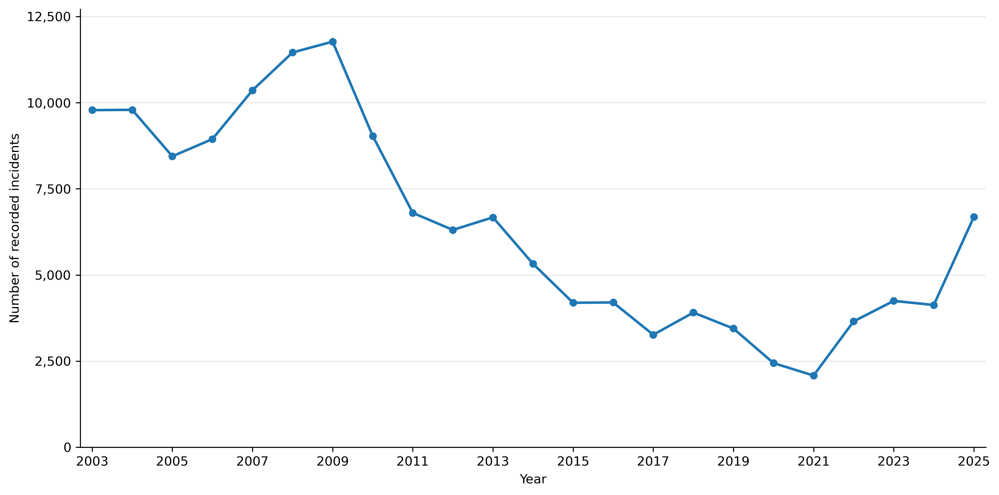

Recorded drug offenses in San Francisco changed in two ways over the last two decades. The total number of incidents dropped sharply after the late 2000s, but the pattern also became less evenly spread across the city and more concentrated in a small number of hotspots.
The data used here comes from publicly available incident reports from the San Francisco Police Department, covering the period from 2003 to 2025. Each entry corresponds to a recorded crime and includes information such as the type of offense, when it happened, and where it took place. In this article the focus is specifically on drug-related incidents such as possession and distribution of drugs [DataSF].
The data is utilized to examine how the number of drug offenses has changed over time, as well as how they are distributed across the city. It is important to keep in mind that these are recorded incidents, so they do not directly measure actual drug activity, but also reflect enforcement and reporting patterns.
Drug offenses are high in the early and late 2000s, reaching a peak around 2009, and then fall sharply through the 2010s. By 2021, the number of recorded incidents is much lower than at the peak. In the most recent years, the trend turns upward again.

The decline in recorded drug offenses could be related to several factors, including changes in enforcement, shifts in drug markets, or broader social and economic developments. Over the same period, San Francisco has experienced significant economic growth, particularly driven by the tech boom, which has reshaped the city and contributed to increasing inequality (Brookings Institution, 2018). While these changes provide important context, the data alone does not allow us to determine the specific causes of the decline.
The animated heatmap below shows the spatial distribution of recorded drug offenses across San Francisco over time, with the intensity indicating how concentrated incidents are in different areas of the city.
Drug offenses are not just unevenly distributed, but highly concentrated in a few specific areas. The strongest and most persistent hotspot is located in the Tenderloin and nearby parts of the city center, where high levels of recorded incidents remain visible throughout the entire period.
In contrast, earlier in the data there is also a noticeable hotspot in the Bayview–Hunters Point area in the southeast of the city. Over time, this hotspot becomes weaker and is almost gone by the late 2010s. This suggests that while the overall number of incidents declines, the spatial pattern also changes, with activity becoming more concentrated in fewer locations.
One possible explanation for the disappearance of the Bayview–Hunters Point hotspot is the broader development of the area over time. The neighborhood has undergone significant changes, including redevelopment and demographic shifts, which may have influenced where drug-related incidents are recorded (Bayview–Hunters Point, Wikipedia). At the same time, the continued concentration in the Tenderloin may reflect both the visibility of drug activity and a stronger focus of enforcement in central parts of the city.
The final figure shows how much of the total number of incidents is captured by the most active locations. Over time, a larger share of incidents is concentrated in fewer places.
Even as the overall number of incidents declines, the concentration increases, reinforcing the pattern observed in the map.
The San Francisco drug offense data reveals two key trends. First, the number of recorded drug offenses rises into the late 2000s, then drops significantly throughout the 2010s, before increasing again in recent years. Second, as the total number of incidents falls, they become more concentrated in Tenderloin and nearby areas. In the earlier years, there is also a smaller hotspot in the Bayview-Hunters Point area in the southeast of the city. Compared to the Tenderloin hotspot, this hotspot dissolves over time.